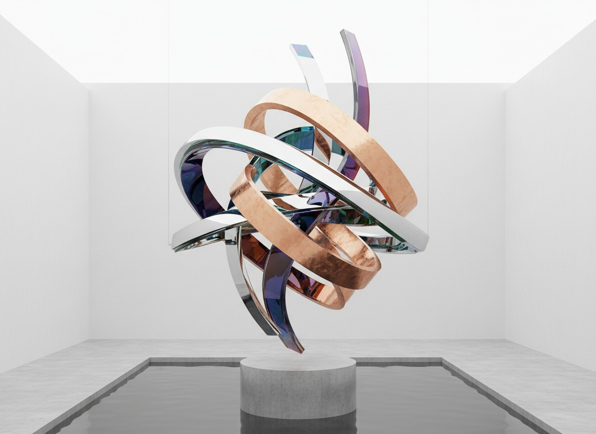
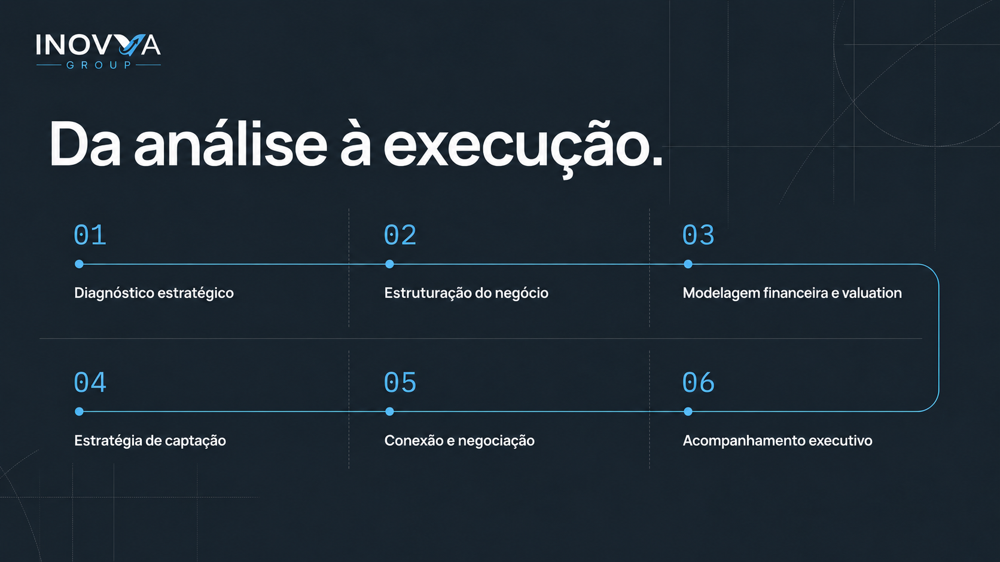
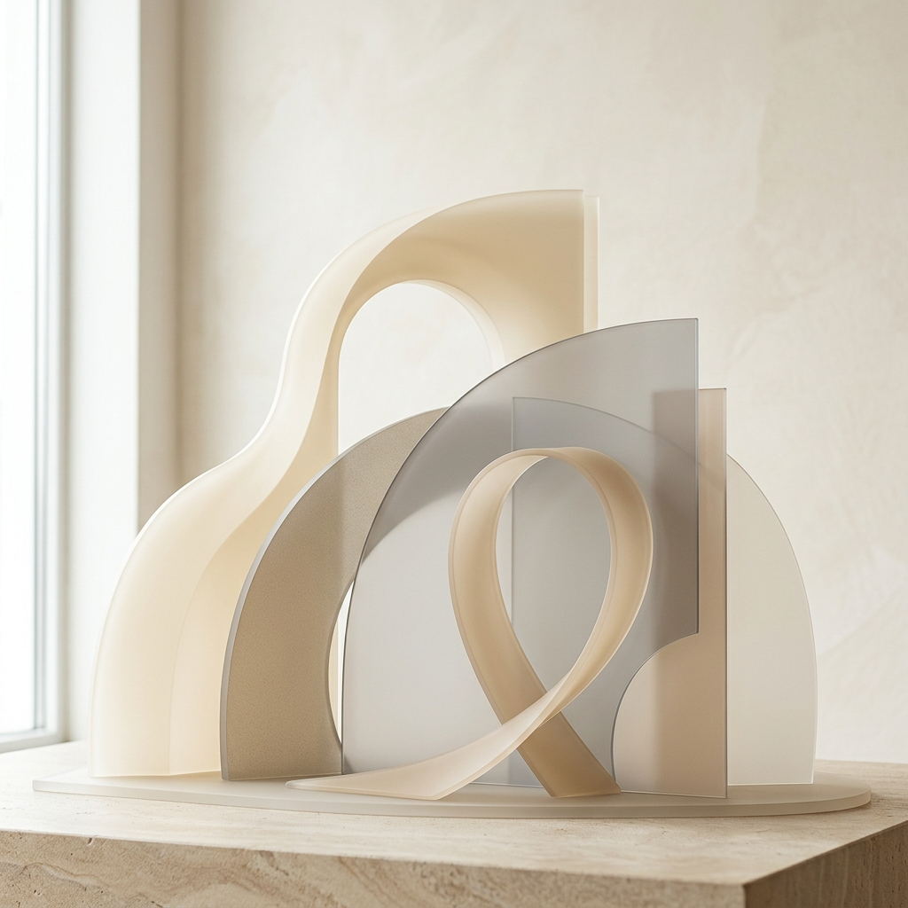
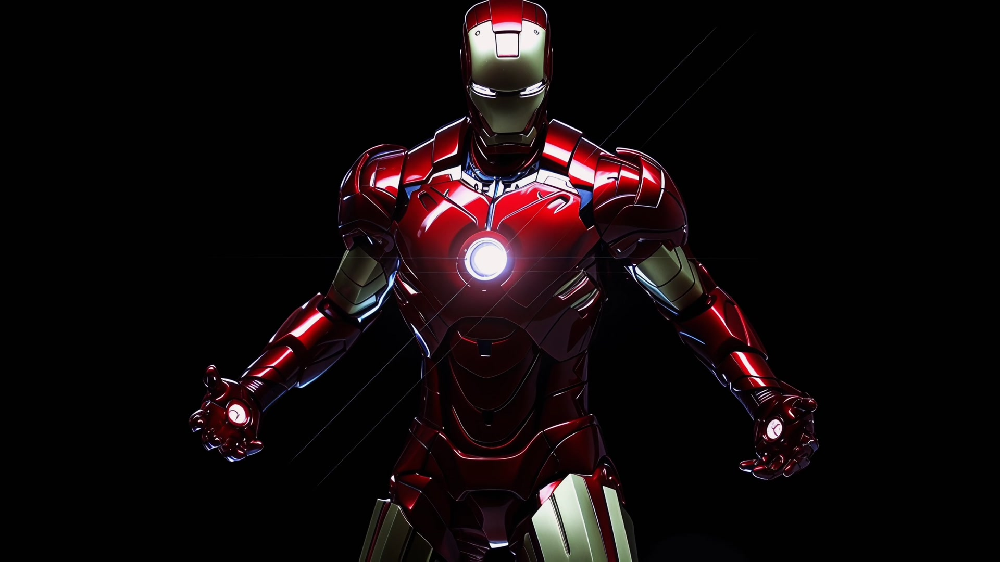
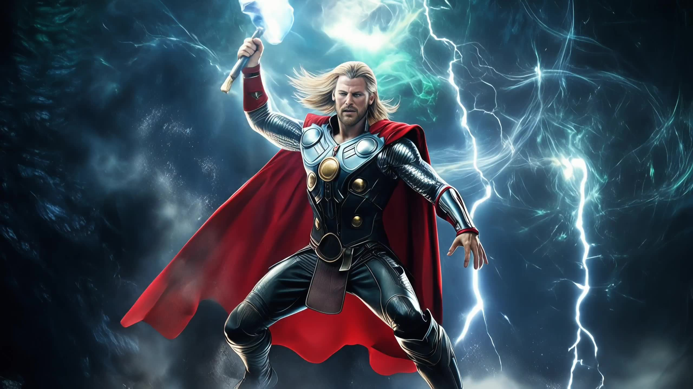

Arquitetura antes do ornamento.
Grid, hierarquia e respiro tornam a informação legível. Elementos técnicos sempre sustentam a narrativa.



O v0 começa com regras simples: estruturar antes de decorar, usar o ciano para orientar e editar cada interface até o próximo passo ficar evidente no site institucional e no showroom.
Grid, hierarquia e respiro tornam a informação legível. Elementos técnicos sempre sustentam a narrativa.
A linha de direção conecta etapas, números e chamadas sem se tornar decoração gratuita.
Cada dobra deve responder uma pergunta, conduzir uma decisão e deixar evidente o próximo passo. Premium nasce da edição, não do excesso.
A combinação é provisória no v0: Manrope articula autoridade, Inter preserva fluidez e Geist Mono organiza evidências, dados e microinformação.
A tipografia ocupa espaço com confiança, mas continua servindo à compreensão — do posicionamento institucional ao detalhe do dossiê.
Deep Ink ancora confiança. Branco amplia respiro. O azul entra como movimento, prova e ação — nunca como massa indiscriminada.
A primeira biblioteca do v0 prioriza decisões essenciais: ação, estado, formulário, conteúdo em camadas e prova de informação.
Os CTAs combinam texto explícito, cápsula de alto contraste e um sinal visual curto para indicar continuidade.
Usar status para traduzir disponibilidade, andamento e validação. O estado nunca depende só da cor.
Cada campo pede apenas o necessário para qualificar a próxima conversa. Exemplo visual para compra, locação, consórcio ou troca.
Revelar detalhes quando necessário sem esconder informações comerciais importantes.
Cards não são caixas para preencher. Eles organizam contraste, prova e próxima ação.
Motion é sinal de navegação e profundidade, não uma camada que bloqueia o conteúdo. O v0 respeita `prefers-reduced-motion` e mantém uma leitura estática funcional.
20–30 px no eixo Y, easing de saída e duração curta o bastante para não atrasar a leitura.
Movimento ambiente lento reservado ao grid, aos conectores e a transições de seção.
Elevação e glow são respostas para elementos acionáveis. Nunca reduzir legibilidade para criar atmosfera.

Assets aprovados entram para comunicar método, confiança e contexto. Na InovvaCar, imagens de veículos devem preservar o protagonismo do produto e apoiar a decisão comercial.
O Sonic Link entra como referência de coreografia: pulso, camadas e aparição sequenciada para conduzir a primeira dobra. A paleta continua sendo a da InovvaCar; nenhum gradiente ou cor neon da referência é herdado.
Elementos entram em sequência curta, com deslocamento vertical, pulso de linha e profundidade leve. O conteúdo permanece legível e o fallback estático continua completo.
Recortes de AEX, Bloomava, AI Intelligence e Savory Plate orientam capítulos, prova humana e curadoria visual.
Iron Man e Thor são referências para páginas internas de cada veículo. Cada sequência deve revelar um único carro, com fallback estático, carregamento progressivo e informações comerciais sempre acessíveis.




Atmosfera, exterior, interior, equipamento e prova devem ocupar módulos claros em uma composição vertical.
Os padrões são reaproveitados pela função. A estética específica de cada site não é copiada como identidade. O Institucional recebe entrada coreografada; o Showroom recebe sequência frame a frame.
Esta matriz orienta o próximo ciclo de componentes e impede que a linguagem de uma página interna invada o site institucional.
A InovvaCar recebe a estrutura institucional e adiciona sua camada de showroom, curadoria e decisão automotiva.
Logo, confiança, precisão, estrutura, azul Inovva e relação institucional.
Curadoria, veículos, compra, locação, consórcio, troca e próximos capítulos.
Scenes 01–03 das páginas do showroom, coleções Signature, Selection, Business e Delivered.